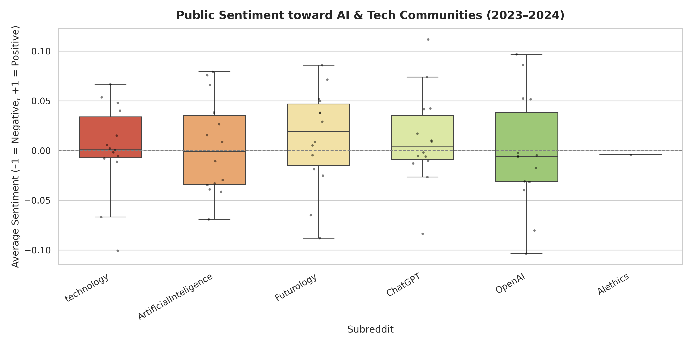

import pandas as pd
df_sum = pd.read_csv("../data/csv/dataset_summary_final.csv")
df_sum| data_type | total_rows | size_gb | date_range_start | date_range_end | |
|---|---|---|---|---|---|
| 0 | comments | 12561291 | 12.56 | 2023-06-01 | 2024-07-31 |
| 1 | submissions | 831021 | 0.83 | 2023-06-01 | 2024-07-31 |
We analyze activity, engagement, concentration, and sentiment trends across large Reddit AI and technology subreddits (2023-06 to 2024-07). Our workflow leverages Spark and Python for data aggregation and analysis at scale.
Dataset Summary:
- Time range: 2023-06 – 2024-07
- Total Comments: See CSV
- Total Submissions: See CSV
- Top Subreddits: Shown below
import pandas as pd
df_sum = pd.read_csv("../data/csv/dataset_summary_final.csv")
df_sum| data_type | total_rows | size_gb | date_range_start | date_range_end | |
|---|---|---|---|---|---|
| 0 | comments | 12561291 | 12.56 | 2023-06-01 | 2024-07-31 |
| 1 | submissions | 831021 | 0.83 | 2023-06-01 | 2024-07-31 |
df_stat = pd.read_csv("../data/csv/subreddit_statistics_final.csv")
df_stat.sort_values(by="total_rows", ascending=False).head(10)| subreddit | num_comments | avg_comment_score | num_submissions | avg_submission_score | total_rows | |
|---|---|---|---|---|---|---|
| 44 | technology | 3210257 | 11.109351 | 54991 | 337.551036 | 3265248 |
| 4 | ChatGPT | 1748893 | 6.564207 | 145862 | 51.257984 | 1894755 |
| 40 | science | 1028744 | 9.878945 | 22592 | 354.457596 | 1051336 |
| 28 | cscareerquestions | 910865 | 5.916743 | 64125 | 12.182316 | 974990 |
| 12 | Futurology | 898463 | 6.395128 | 15884 | 176.512465 | 914347 |
| 9 | Entrepreneur | 755790 | 2.477290 | 86534 | 4.859373 | 842324 |
| 45 | webdev | 516710 | 4.481493 | 57369 | 8.473967 | 574079 |
| 35 | learnprogramming | 452260 | 3.041514 | 50429 | 5.591862 | 502689 |
| 19 | OpenAI | 337768 | 4.450842 | 25574 | 24.268476 | 363342 |
| 38 | programming | 325140 | 8.167888 | 31396 | 20.063256 | 356536 |
Business Question:
How have the post and comment volumes changed monthly? Are there observable surges aligned with key AI/tech events?
Analysis Approach:
- Aggregate posts/comments by community and month (Spark)
- Visualize activity lines
import pandas as pd
import matplotlib.pyplot as plt
df = pd.read_csv("../data/plots/rq1_activity.csv")
plt.figure(figsize=(10, 5))
for sub in df['subreddit'].unique():
subdf = df[df['subreddit']==sub]
plt.plot(subdf['month'], subdf['total_activity'], marker='o', label=sub)
plt.title("Monthly Activity - AI/Tech Subreddits")
plt.xlabel("Month"), plt.ylabel("Posts + Comments"), plt.xticks(rotation=45)
plt.legend(bbox_to_anchor=(1.05, 1), loc='upper left')
plt.tight_layout()
Findings:
Business Question:
Which AI communities retain engaged users month-over-month, rather than fleeting traffic?
Analysis Approach:
- Compute and visualize monthly (returning/active user) ratio (Spark)
- Show engagement as a heatmap
import pandas as pd
import seaborn as sns
import matplotlib.pyplot as plt
df = pd.read_csv("../data/plots/rq2_engagement.csv")
pivot = df.pivot(index="month", columns="subreddit", values="engagement_ratio")
plt.figure(figsize=(11,6))
sns.heatmap(pivot, cmap="YlGnBu", linewidths=0.3)
plt.title("User Retention: Returning/Active Ratio")
plt.tight_layout()
Findings:
Business Question:
Are conversations dominated by a small number of viral posts, or is attention widely spread?
Analysis Approach:
- Calculate the Gini coefficient for comment distribution per post (Spark)
- Show per-subreddit violin/bar plots
import pandas as pd
import seaborn as sns
import matplotlib.pyplot as plt
df = pd.read_csv("../data/plots/rq3_gini.csv")
sns.violinplot(data=df, x="subreddit", y="gini_comments", palette="coolwarm", inner="box")
plt.title("Discussion Gini Index by Subreddit")
plt.xlabel("Subreddit"), plt.ylabel("Gini (Comments/Post)"), plt.xticks(rotation=30, ha="right")
plt.tight_layout()
avg_gini = df.groupby("subreddit")[["gini_comments", "gini_scores"]].mean().reset_index()
sns.barplot(data=avg_gini, x="gini_comments", y="subreddit", palette="viridis")
plt.title("Average Gini Index - Attention Concentration")
plt.xlabel("Average Gini (Comments/Post)")
plt.tight_layout()
Findings:
Business Question:
How does sentiment change over time or after major events in these subreddits?
Analysis Approach:
- Compute monthly avg. sentiment by subreddit
- Visualize with box+strip plots
import pandas as pd
import seaborn as sns
import matplotlib.pyplot as plt
df = pd.read_csv("../data/plots/rq4_sentiment.csv")
sns.boxplot(data=df, x="subreddit", y="avg_sentiment", palette="RdYlGn", showfliers=False, width=0.6)
sns.stripplot(data=df, x="subreddit", y="avg_sentiment", color="black", size=3, jitter=True, alpha=0.5)
plt.axhline(0, color="gray", linestyle="--", linewidth=1)
plt.title("Sentiment by Month: AI/Tech Subreddits")
plt.ylabel("Average Sentiment")
plt.xlabel("Subreddit")
plt.xticks(rotation=30, ha="right")
plt.tight_layout()
Findings: